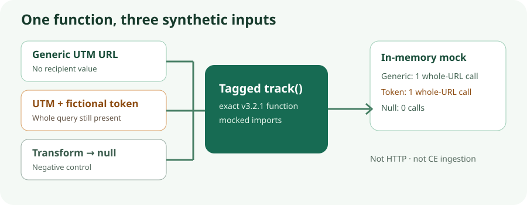

Plausible CE v3.2.1 · function test · 8 Nov 2026
The tagged tracker function handed the whole URL to its request boundary
In a controlled execution of Plausible Analytics v3.2.1’s exact tagged track function, a pageview placed all of location.href in payload.u. That included a fictional query token when one was present. The test captured calls to an in-memory sendRequest mock; it did not send an HTTP request or run a built CE tracker.

Three synthetic cases
| Input to the function | Captured in memory | Meaning |
|---|---|---|
Generic URL: https://example.test/library?utm_source=newsletter&utm_medium=email&utm_campaign=november-library | One sendRequest call; pageview; payload.u exactly equals the input URL. | The tested automatic-URL branch did not reduce the URL to a path or selected UTM fields. |
The same URL plus &token=FICTIONAL-DO-NOT-USE | One call; payload.u exactly equals the entire input, including the fictional token. | A query value on this branch reaches the request-function boundary, even when it is unrelated to campaign tagging. |
Generic URL with transformRequest() => null | Zero calls. | The negative control took the function’s ignored-event path. |
The mocked endpoint was https://analytics.example.test/api/event, not an endpoint discovered from an installation. The mock configuration and payload.v=2 compile constant were supplied by the test; neither establishes a shipped script version. The flags selected a web, automatic-URL path, not equivalence with every built tracker variant. See the tagged track function and configuration source.
What was executed
The exact v3.2.1-tagged tracker/src/track.js function body and its ignored-event helper were executed in a fresh Node VM for each case. Only the module-level export prefix was removed. Imports for sendRequest, engagement hooks, configuration and script element were mocked. sendRequest appended its arguments to an array; the tagged networking module was not executed. The saved source was byte-checked against the tag tree at commit e4f5a87a5570bd61605217e7ceb376636db8eddb (Git blob 1b2b0d4ed220ae8ebe9314bdc27b0ce826a48df8, SHA-256 0ba46d2de20c0b256f2402a4936613fcfcff1d3ab2be5be29cd458beaf9db154).
Assertions checked pageview, exact payload.u, endpoint and call count. The positive cases also recorded d=example.test, r=null and mock-supplied v=2. Replacing location.href with a fixed URL in memory made the token case fail its exact-URL assertion, a sensitivity check of that claim. The reserved example.test address and token were fictional. No visitor, account, real secret, browser, transport or external request was involved.
Do not extend the result beyond this handoff
The function test does not show what a built or deployed CE tracker sends, what proxies or logs retain, what ingestion stores, or what a dashboard displays. Manual URL overrides, request transforms, blockers, exclusions, consent setup, redirects and deployed configuration can alter behavior. It does not measure signup, conversion or legal compliance. The earlier Plausible CE source audit described UTM ingestion and report concepts but did not run a CE instance; this test does not turn that source reading into a runtime observation. The Umami source audit is not a metric-equivalence benchmark.
To make a shipped-request claim, pin a built tracker or use an isolated authorized CE instance and capture a synthetic HTTP request. To make a storage or dashboard claim, additionally trace that request through ingestion. Until then, use a generic tagged URL and verify the collection boundary of any analytics already in use.